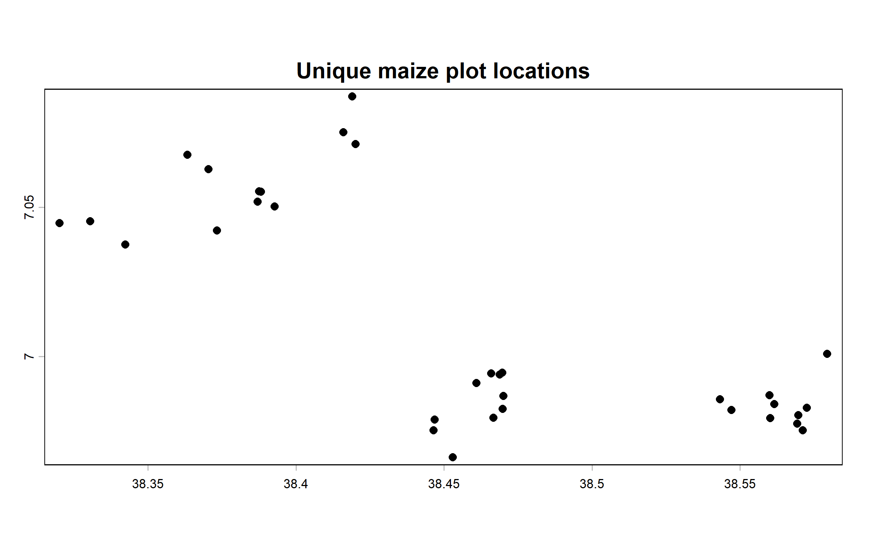
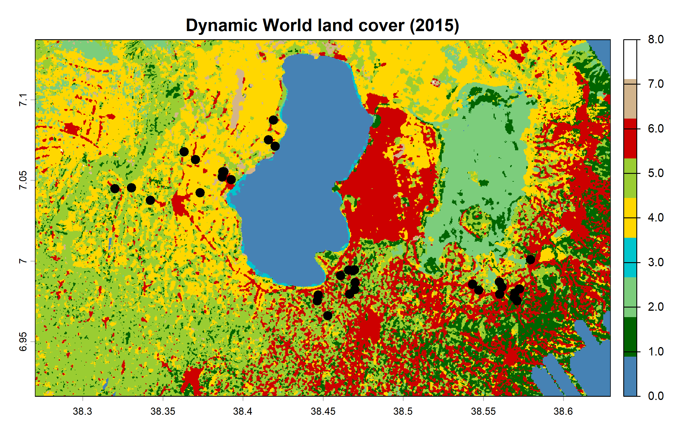
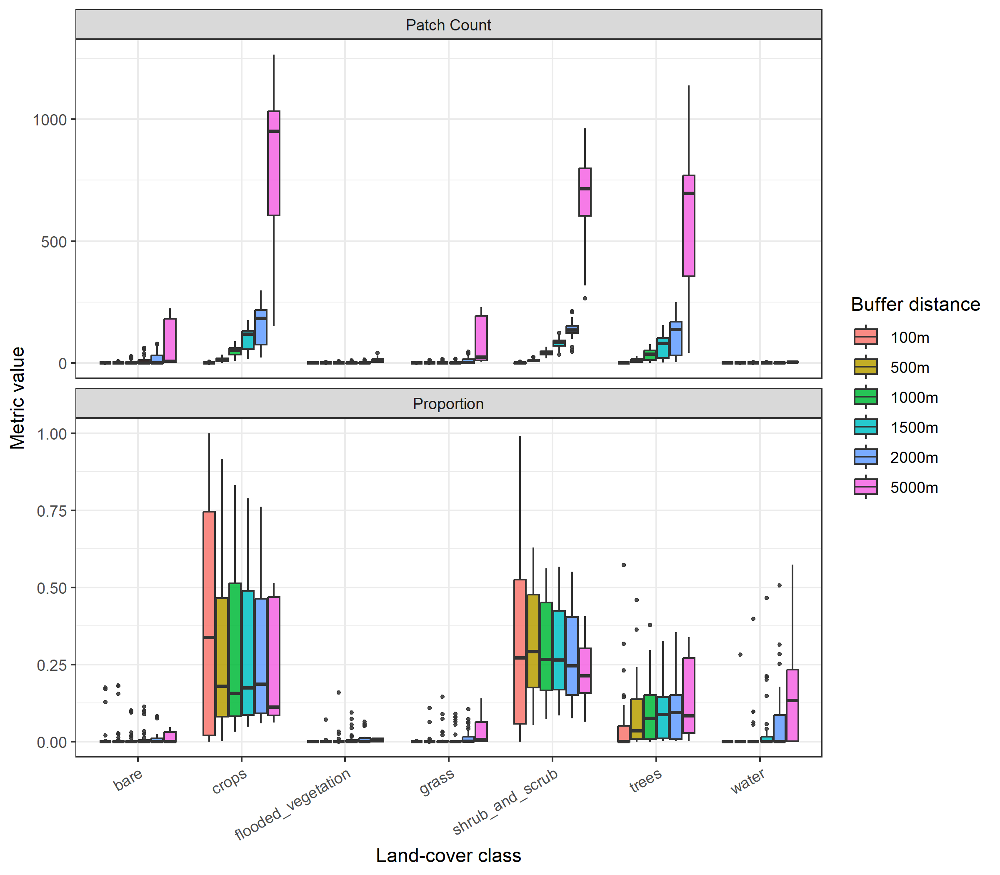
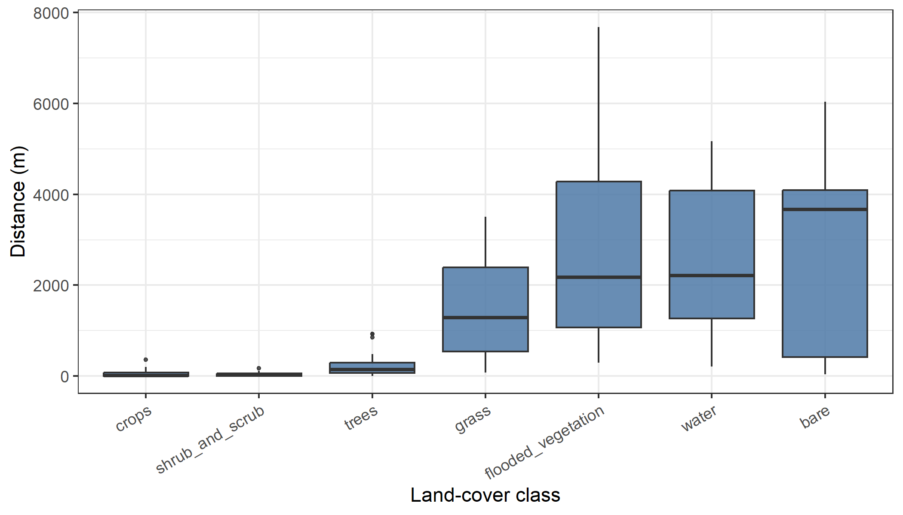
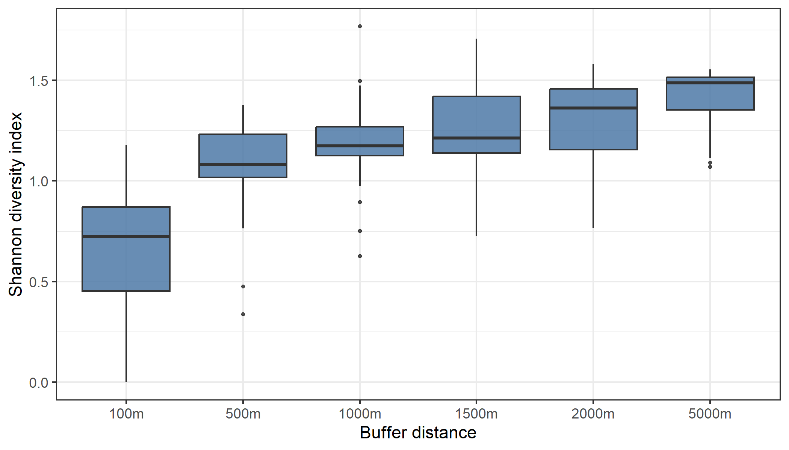
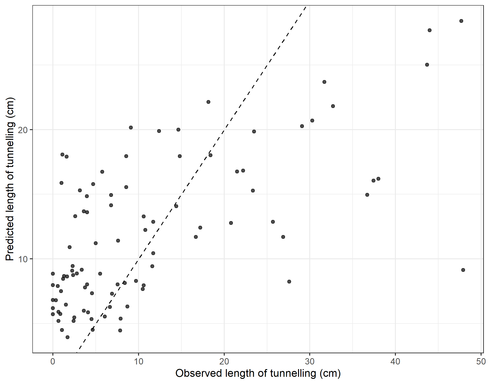
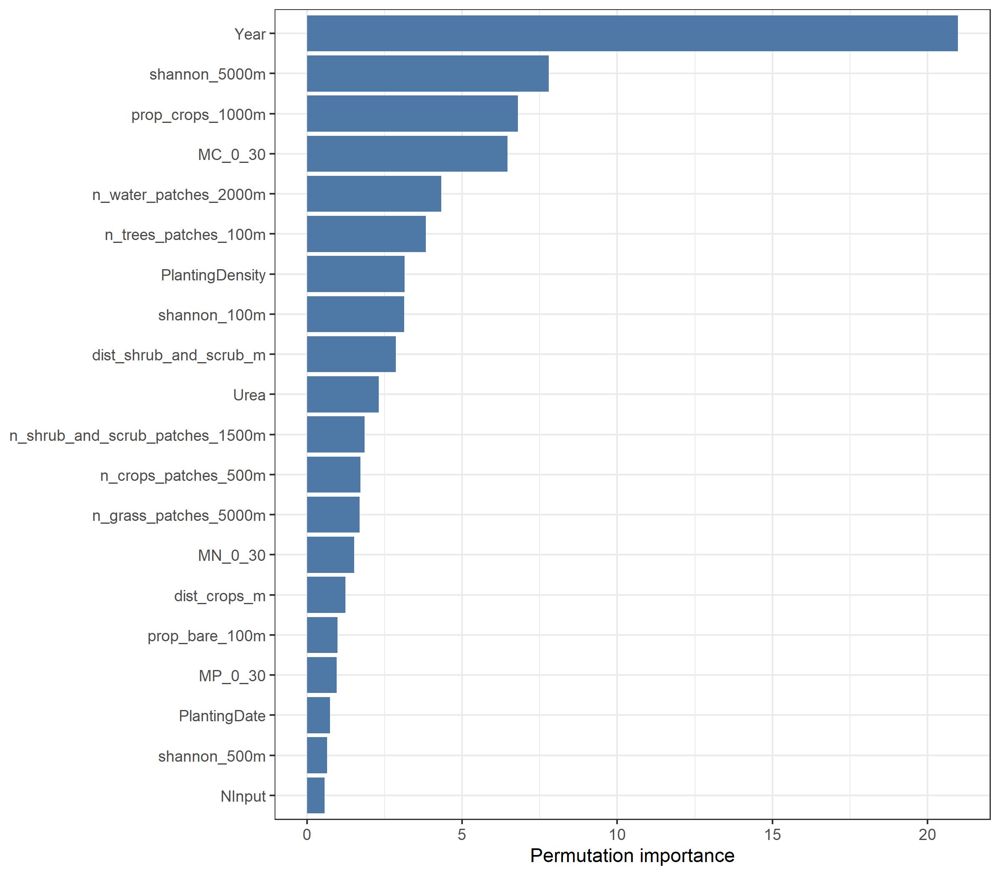
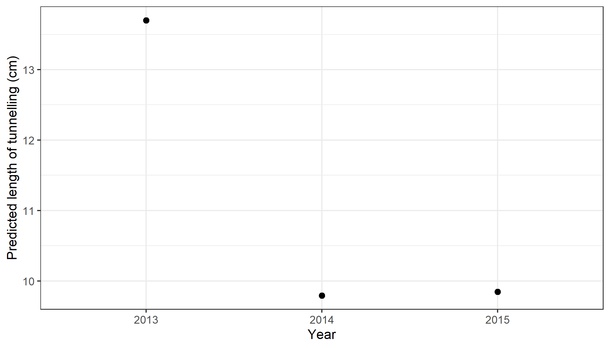
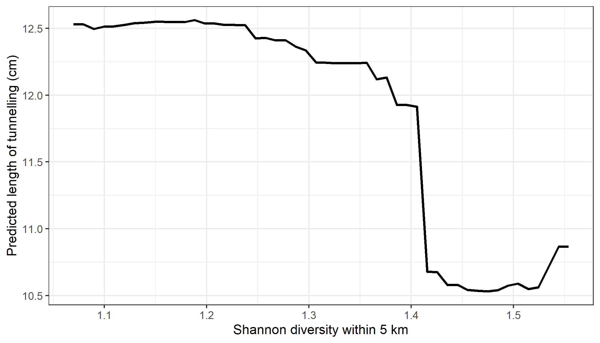
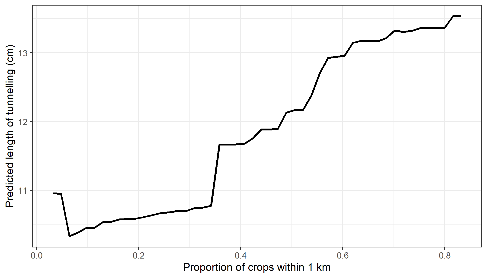

Chapter 9 Spatial prediction of crop damage
This chapter presents a spatial modelling workflow to explore how landscape characteristics influence crop damage by pests and to predict its distribution across the study area.
9.1 Introduction
Crop damage by insect pests is often influenced by processes operating beyond the field itself. The composition and configuration of the surrounding landscape can affect the abundance and movement of pests and their natural enemies, and may therefore influence the level of damage observed in individual fields. Understanding these relationships requires considering both field-level characteristics and the landscape in which fields are embedded.
This chapter presents a workflow to describe the landscape surrounding maize fields in Ethiopia and examine its relationship with damage caused by stemborers. The analysis combines field observations collected over three years: 2013, 2014 and 2015 (Y. Kebede et al. 2019), with land-cover information derived from a Dynamic World raster. Landscape metrics are calculated around each field at several spatial scales, and are then related to observed stemborer damage using a random forest model.
The dataset contains 94 plot-year observations from 33 plots. Landscape characteristics are treated as static over the study period, whereas stemborer damage varies between years. Landscape metrics are therefore calculated once for each unique plot and then joined to the 94 plot-year observations using PlotID. This retains the temporal variation in damage rather than averaging observations across years.
The workflow comprises five main stages:
- Preparing the field observations and checking their geographic coordinates;
- Calculating landscape metrics around each unique plot from a land-cover raster;
- Exploring the distribution of landscape metrics across plots and buffer distances;
- Joining landscape metrics to the plot-year observations and examining their relationship with stemborer damage;
- Fitting and evaluating a random forest model while accounting for repeated observations from the same plot.
The analysis focuses on LengthTunnelling as the main indicator of stemborer damage. Other indicators in the dataset, including CobDamage, TotalHoles and TotalLarvaePlant, can be examined using the same workflow. The random forest is used here as an exploratory predictive approach. With only 33 independent plots, model performance and variable importance should be interpreted cautiously.
A standalone R script containing the workflow is available here: https://github.com/FBaudron/book_standardized_workflows/blob/main/09-spatial_prediction_crop_damage/spatial_prediction_crop_damage.R.
We first load the necessary packages.
if (!require("terra")) install.packages("terra")
if (!require("openxlsx")) install.packages("openxlsx")
if (!require("dplyr")) install.packages("dplyr")
if (!require("tidyr")) install.packages("tidyr")
if (!require("ggplot2")) install.packages("ggplot2")
if (!require("stringr")) install.packages("stringr")
if (!require("ranger")) install.packages("ranger")
if (!require("pdp")) install.packages("pdp")
library(terra)
library(openxlsx)
library(dplyr)
library(tidyr)
library(ggplot2)
library(stringr)
library(ranger)
library(pdp)9.2 Data preparation
The Excel workbook can be downloaded from Dataverse (https://dataverse.harvard.edu/dataset.xhtml?persistentId=doi:10.7910/DVN/C9Z4I4) or from the Github repositing the standalone script (https://github.com/FBaudron/book_standardized_workflows/blob/main/09-spatial_prediction_crop_damage/Kebede%20et%20al.%202019a.xlsx).
The Excel workbook contains a sheet named Data with 94 observations and 45 variables. Each row represents one plot in one year. The same plot can therefore occur more than once, while its geographic coordinates and surrounding landscape are assumed to remain constant over the study period.
d_eth = as.data.frame(read.xlsx("Data/Kebede et al. 2019a.xlsx", sheet = "Data"))The coordinates are stored as numeric values without decimal points. We restore the decimal point by retaining one digit before it for latitude and two for longitude.
fix_coord = function(x, int_digits) {
n = nchar(as.character(as.integer(x)))
x/10^(n - int_digits)
}
d_eth = d_eth %>%
mutate(Lat = fix_coord(Lat, int_digits = 1), Lon = fix_coord(Lon, int_digits = 2))Landscape metrics are calculated once per plot because the land-cover raster represents a single landscape snapshot (2015) and the landscape descriptors are treated as static across the three years. We therefore identify unique combinations of PlotID, latitude and longitude.
unique_plots = d_eth %>%
distinct(PlotID, Lat, Lon)
nrow(unique_plots)[1] 33The resulting table is converted to the format expected by run_hwc_pipeline(). The function expects columns named lon and lat, as well as a unique point identifier.
ethiopia_pts = data.frame(point_id = as.character(unique_plots$PlotID), lat = unique_plots$Lat,
lon = unique_plots$Lon)
ethiopia_pts2 = terra::vect(ethiopia_pts, geom = c("lon", "lat"), crs = "EPSG:4326")
plot(ethiopia_pts2, main = "Unique maize plot locations")
9.3 Calculate landscape metrics
9.3.1 Functions to calculate landscape metrics
landscape_metrics() calculates raster-based metrics around each point, including land-cover proportions, patch numbers, Shannon diversity and distances to the nearest occurrence of each class. vector_layer_metrics() can calculate complementary metrics for vector layers such as roads, rivers and polygons. run_hwc_pipeline() brings these components together and returns one row per plot, with buffer-specific metrics in separate columns.
The distance extraction below deliberately selects the second column returned by terra::extract(), which contains the raster value. The first column is the extraction ID and is not the distance.
## 1. Landscape metrics from land-use raster
landscape_metrics = function(landuse_map, points, class_ids, buffers, id_col = "id",
crs_proj, dist_only_ids = integer(0)) {
lu_proj = terra::project(landuse_map, crs_proj, method = "near")
pts_proj = terra::project(points, crs_proj)
pt_xy = terra::crds(pts_proj)
ids = as.data.frame(pts_proj)[[id_col]]
# Distance to nearest land-use class
all_dist_ids = c(class_ids, dist_only_ids)
dist_df = data.frame(id = ids)
for (cl in all_dist_ids) {
cl_r = lu_proj == cl
cl_r[cl_r == 0] = NA
dist_r = terra::distance(cl_r)
dist_df[[paste0("dist_class", cl)]] = terra::extract(dist_r, pt_xy)[, 1]
}
# Buffer-based metrics
buffer_rows = vector("list", length(buffers))
for (j in seq_along(buffers)) {
b = buffers[j]
message(format(Sys.time(), "%H:%M:%S"), " Buffer ", b, " m started")
buf = terra::buffer(pts_proj, width = b)
pt_rows = vector("list", nrow(pts_proj))
for (i in seq_len(nrow(pts_proj))) {
if (i%%50 == 0)
message("Point ", i, " of ", nrow(pts_proj))
lu_crop = terra::crop(lu_proj, buf[i, ], mask = TRUE)
vals = terra::values(lu_crop)
vals = vals[!is.na(vals)]
total_n = length(vals)
row = data.frame(id = ids[i], buffer = b, flag_empty_buffer = total_n ==
0)
if (total_n == 0) {
pt_rows[[i]] = row
next
}
for (cl in class_ids) {
row[[paste0("prop_class", cl)]] = sum(vals == cl)/total_n
bin = lu_crop == cl
bin[bin == 0] = NA
if (sum(!is.na(terra::values(bin))) == 0) {
row[[paste0("npatch_class", cl)]] = 0
} else {
patches_r = terra::patches(bin, directions = 8)
pvals = terra::values(patches_r)
row[[paste0("npatch_class", cl)]] = length(unique(pvals[!is.na(pvals)]))
}
}
p = table(vals)/total_n
p = p[p > 0]
row$shannon = -sum(p * log(p))
pt_rows[[i]] = row
}
buffer_rows[[j]] = do.call(rbind, pt_rows)
message(format(Sys.time(), "%H:%M:%S"), " Buffer ", b, " m completed")
}
buffer_metrics = do.call(rbind, buffer_rows)
merge(buffer_metrics, dist_df, by = "id")
}
## 2. Metrics from vector layers
vector_layer_metrics = function(points_proj, buffers, id_col = "point_id", polygon_layers = list(),
line_layers = list()) {
ids = as.data.frame(points_proj)[[id_col]]
nearest_dist = function(pts, layer) {
vapply(seq_len(nrow(pts)), function(i) min(terra::distance(pts[i, ], layer)),
numeric(1))
}
dist_df = data.frame(id = ids)
for (nm in names(polygon_layers)) {
dist_df[[paste0("dist_", nm)]] = nearest_dist(points_proj, polygon_layers[[nm]])
}
for (nm in names(line_layers)) {
dist_df[[paste0("dist_", nm)]] = nearest_dist(points_proj, line_layers[[nm]])
}
buffer_rows = vector("list", length(buffers))
for (j in seq_along(buffers)) {
b = buffers[j]
buf = terra::buffer(points_proj, width = b)
buf_area = terra::expanse(buf)
pt_rows = vector("list", nrow(points_proj))
for (i in seq_len(nrow(points_proj))) {
row = data.frame(id = ids[i], buffer = b)
for (nm in names(polygon_layers)) {
inter = tryCatch(terra::intersect(buf[i, ], polygon_layers[[nm]]),
error = function(e) NULL)
row[[paste0("prop_", nm)]] = if (is.null(inter) || nrow(inter) ==
0) {
0
} else {
sum(terra::expanse(inter))/buf_area[i]
}
}
for (nm in names(line_layers)) {
inter = tryCatch(terra::intersect(buf[i, ], line_layers[[nm]]), error = function(e) NULL)
row[[paste0(nm, "_length_m")]] = if (is.null(inter) || nrow(inter) ==
0) {
0
} else {
sum(terra::perim(inter))
}
}
pt_rows[[i]] = row
}
buffer_rows[[j]] = do.call(rbind, pt_rows)
}
buffer_metrics = do.call(rbind, buffer_rows)
merge(buffer_metrics, dist_df, by = "id")
}
## 3. Generic landscape metrics pipeline
run_hwc_pipeline = function(points, id_col, detail_cols, lulc, lulc_classes, crs_proj,
buffers_m, dist_only_classes = integer(0), polygon_layer_paths = list(), line_layer_paths = list(),
skip_crop = character(0), margin_deg = 0.05, output_path, fill_na_km2 = NULL,
fill_na_value = NULL) {
lu = lulc
# Optional filling of large internal no-data areas
if (!is.null(fill_na_km2) && !is.null(fill_na_value)) {
lu = lu[[1]]
pa = terra::patches(terra::ifel(is.na(lu), 1, NA), directions = 8)
pm = terra::as.matrix(pa, wide = TRUE)
edge_ids = unique(c(pm[1, ], pm[nrow(pm), ], pm[, 1], pm[, ncol(pm)]))
area_by_patch = terra::zonal(terra::cellSize(lu, unit = "km"), pa, fun = "sum")
big_ids = area_by_patch[area_by_patch[[2]] >= fill_na_km2, 1]
fill_ids = setdiff(big_ids, edge_ids[!is.na(edge_ids)])
message("Pipeline: filled ", length(fill_ids), " no-data area(s) with class ",
fill_na_value)
if (length(fill_ids) > 0) {
lu = terra::cover(lu, terra::classify(pa, cbind(fill_ids, fill_na_value),
others = NA))
}
}
pts = terra::vect(points, geom = c("lon", "lat"), crs = "EPSG:4326")
# Raster-based metrics
raster_metrics = landscape_metrics(landuse_map = lu, points = pts, class_ids = lulc_classes,
buffers = buffers_m, id_col = id_col, crs_proj = crs_proj, dist_only_ids = dist_only_classes)
class_name_map = setNames(names(c(lulc_classes, dist_only_classes)), paste0("class",
c(lulc_classes, dist_only_classes)))
nms = names(raster_metrics)
for (tag in names(class_name_map)) {
nms = gsub(tag, class_name_map[[tag]], nms)
}
names(raster_metrics) = nms
# Optional vector-based metrics
have_vector_layers = length(polygon_layer_paths) > 0 || length(line_layer_paths) >
0
if (have_vector_layers) {
pts_proj = terra::project(pts, crs_proj)
study_ext_wgs = terra::ext(pts) + margin_deg
study_ext_vect = terra::vect(study_ext_wgs, crs = "EPSG:4326")
crop_to_study = function(layer_path) {
layer = terra::vect(layer_path)
ext_native = terra::project(study_ext_vect, terra::crs(layer))
cropped = terra::crop(layer, ext_native)
if (nrow(cropped) == 0) {
stop("No features found in ", layer_path, ". Increase margin_deg or skip cropping this layer.")
}
cropped
}
polygon_layers = setNames(lapply(names(polygon_layer_paths), function(nm) {
p = polygon_layer_paths[[nm]]
lyr = if (nm %in% skip_crop)
terra::vect(p) else crop_to_study(p)
terra::makeValid(terra::project(lyr, crs_proj))
}), names(polygon_layer_paths))
line_layers = setNames(lapply(names(line_layer_paths), function(nm) {
p = line_layer_paths[[nm]]
lyr = if (nm %in% skip_crop)
terra::vect(p) else crop_to_study(p)
terra::project(lyr, crs_proj)
}), names(line_layer_paths))
vector_metrics = vector_layer_metrics(points_proj = pts_proj, buffers = buffers_m,
id_col = id_col, polygon_layers = polygon_layers, line_layers = line_layers)
long_metrics = merge(raster_metrics, vector_metrics, by = c("id", "buffer"))
} else {
long_metrics = raster_metrics
}
# Reshape metrics to wide format
dist_cols = grep("^dist_", names(long_metrics), value = TRUE)
dist_wide = unique(long_metrics[, c("id", dist_cols)])
names(dist_wide)[-1] = paste0(names(dist_wide)[-1], "_m")
buf_cols = setdiff(names(long_metrics), c("id", "buffer", dist_cols, "flag_empty_buffer"))
wide_list = lapply(buffers_m, function(b) {
sub = long_metrics[long_metrics$buffer == b, c("id", buf_cols)]
names(sub)[-1] = paste0(names(sub)[-1], "_", b, "m")
sub
})
buf_wide = Reduce(function(x, y) merge(x, y, by = "id"), wide_list)
wide = merge(dist_wide, buf_wide, by = "id")
names(wide)[names(wide) == "id"] = id_col
names(wide) = gsub("^npatch_(.+)_([0-9]+m)$", "n_\\1_patches_\\2", names(wide))
if (length(detail_cols) > 0) {
wide = merge(points[, c(id_col, detail_cols)], wide, by = id_col)
}
write.csv(wide, output_path, row.names = FALSE)
wide
}9.3.2 Land-cover map
The land-cover raster was derived from Dynamic World for 2015, and can be downloaded here: https://www.dropbox.com/scl/fi/dj9egibkh0mrwk09s44df/ethiopia_dynamicworld_2015_updated.tiff?rlkey=tjh8s4rvtzeen596vu7zk8ata&st=1b27r40m&dl=0. We first load and inspect the raster. The raster uses categorical land-cover codes, so nearest-neighbour resampling is used whenever it is projected; interpolation methods such as bilinear interpolation would create artificial class values.
lulc = terra::rast("Data/Spatial/Raw/ethiopia_dynamicworld_2015_updated.tiff")
ethiopia_pts2 = terra::project(ethiopia_pts2, terra::crs(lulc))
plot(lulc, main = "Dynamic World land cover (2015)", col = c("steelblue", "darkgreen",
"palegreen3", "turquoise3", "gold", "olivedrab3", "red3", "tan", "white"))
terra::points(ethiopia_pts2, pch = 20, cex = 2, col = "black")
We use the following Dynamic World classes in the landscape analysis:
dynamicworld_classes = c(water = 0, trees = 1, grass = 2, flooded_vegetation = 3,
crops = 4, shrub_and_scrub = 5, bare = 7)Distances and areas are calculated in a projected coordinate reference system, with metres as the unit. We use UTM zone 37N (EPSG:32637), which is appropriate for the study area in southern Ethiopia.
Landscape metrics are calculated within six circular buffers around each plot: 100, 500, 1,000, 1,500, 2,000 and 5,000 m. These distances represent different spatial extents around each field, from the immediate surroundings to the broader landscape.
crs_ethiopia = "EPSG:32637"
buffers_ethiopia = c(100, 500, 1000, 1500, 2000, 5000)9.3.3 Run the landscape-metric workflow
The function run_hwc_pipeline() combines the raster-based metrics calculated by landscape_metrics(). For each plot and buffer distance, it calculates:
- the proportion of the buffer occupied by each selected land-cover class;
- the number of separate patches of each selected class;
- the Shannon diversity index of land-cover classes within the buffer;
- the distance from the plot to the nearest cell of each selected land-cover class.
The vector-layer component of the function can also calculate distances to roads, rivers or other linear features, and the proportion of buffers covered by polygon layers. No vector layers are used in this example, so the analysis focuses on the Dynamic World raster.
ethiopia_wide = run_hwc_pipeline(points = ethiopia_pts, id_col = "point_id", detail_cols = character(0),
lulc = lulc, lulc_classes = dynamicworld_classes, dist_only_classes = integer(0),
crs_proj = crs_ethiopia, buffers_m = buffers_ethiopia, polygon_layer_paths = list(),
line_layer_paths = list(), output_path = "Data/ethiopia_landscape_metrics_wide.csv")The output contains one row per unique plot. Buffer-dependent metrics are stored in separate columns, with the buffer distance appended to each variable name. Distances to land-cover classes are stored once per plot because they do not depend on buffer size.
9.4 Explore landscape metrics
We first read the output table and convert it from wide to long format. This makes it possible to compare the distribution of each metric across buffer distances.
metrics = ethiopia_wide
buffer_levels = c("100m", "500m", "1000m", "1500m", "2000m", "5000m")
metrics_long = metrics %>%
pivot_longer(cols = -point_id, names_to = "raw_metric", values_to = "value") %>%
mutate(buffer = str_extract(raw_metric, "(100|500|1000|1500|2000|5000)m$"), buffer = if_else(is.na(buffer),
"Distance (m)", buffer), buffer = factor(buffer, levels = c(buffer_levels,
"Distance (m)")), metric_type = case_when(str_starts(raw_metric, "prop_") ~
"Proportion", str_starts(raw_metric, "n_") & str_detect(raw_metric, "_patches_") ~
"Patch Count", str_starts(raw_metric, "shannon") ~ "Shannon Diversity", str_starts(raw_metric,
"dist_") ~ "Distance to Class (m)", TRUE ~ "Other"), landcover = raw_metric %>%
str_remove("^(prop_|n_|dist_)") %>%
str_remove("_patches(_(100|500|1000|1500|2000|5000)m)?$") %>%
str_remove("_m$") %>%
str_remove("_(100|500|1000|1500|2000|5000)m$") %>%
if_else(metric_type == "Shannon Diversity", "All classes", .))We plot the proportion of each land-cover class and the number of patches across buffer distances, to assess how landscape composition and configuration vary among plot locations and how these differences depend on the spatial scale considered.
metrics_long %>%
filter(metric_type %in% c("Proportion", "Patch Count")) %>%
ggplot(aes(x = landcover, y = value, fill = buffer)) + geom_boxplot(outlier.size = 0.8,
alpha = 0.85) + facet_wrap(~metric_type, scales = "free_y", ncol = 1) + labs(x = "Land-cover class",
y = "Metric value", fill = "Buffer distance") + theme_bw() + theme(axis.text.x = element_text(angle = 30,
hjust = 1))
Distance metrics describe the proximity of each plot to the nearest cell belonging to a given land-cover class. These metrics are not calculated separately for each buffer because they represent the distance from the plot to the nearest occurrence of the class in the raster.
metrics_long %>%
filter(metric_type == "Distance to Class (m)") %>%
ggplot(aes(x = reorder(landcover, value, median, na.rm = TRUE), y = value)) +
geom_boxplot(fill = "#4E79A7", outlier.size = 0.8, alpha = 0.85) + labs(x = "Land-cover class",
y = "Distance (m)") + theme_bw() + theme(axis.text.x = element_text(angle = 30,
hjust = 1))
The Shannon index summarises the diversity of land-cover classes within a buffer. It increases with the number of classes present and with the evenness of their relative proportions. It does not, by itself, distinguish between different landscape configurations: two buffers with similar class proportions can have similar Shannon values even if their patches are arranged differently.
metrics_long %>%
filter(metric_type == "Shannon Diversity") %>%
ggplot(aes(x = buffer, y = value)) + geom_boxplot(fill = "#4E79A7", outlier.size = 0.8,
alpha = 0.85) + labs(x = "Buffer distance", y = "Shannon diversity index") +
theme_bw()
9.5 Link landscape metrics to plot-year observations
Landscape metrics are calculated for unique plots, whereas the response variable varies between years. We therefore join the landscape metrics to the original dataset using PlotID. This produces a table with one row per plot-year observation.
d_eth$PlotID = as.character(d_eth$PlotID)
d_eth_metrics = d_eth %>%
left_join(ethiopia_wide, by = c(PlotID = "point_id"))9.5.1 Predict stemborer damage using random forest
The response variable is LengthTunnelling. The predictors are the landscape metrics, Year, and a predefined set of field-level variables covering planting, cropping system, maize variety, fertilizer inputs and topsoil properties. No other variables from the workbook are included.
The observation with an exceptionally large tunnelling length (approximately 1,025 cm) is excluded from the analysis. This value is far outside the range of the other observations and has a disproportionate influence on prediction error. The exclusion is made explicitly below so that it can be revisited if the original measurement is subsequently verified.
The extreme observation is identified before filtering:
d_eth_metrics %>%
filter(LengthTunnelling >= 100) %>%
select(PlotID, Year, LengthTunnelling) PlotID Year LengthTunnelling
1 3 2015 1025response_variable = "LengthTunnelling"
field_predictors = c("PlantingDate", "PlantingDensity", "CroppingSystem", "MaizeVariety",
"DAP", "Urea", "NInput", "MC_0_30", "MN_0_30", "MP_0_30", "pH_top_soil")
# Check that all requested field-level variables are present in the workbook.
missing_field_predictors = setdiff(field_predictors, names(d_eth))
if (length(missing_field_predictors) > 0) {
stop("Missing field-level variables: ", paste(missing_field_predictors, collapse = ", "))
}
landscape_predictors = setdiff(names(ethiopia_wide), "point_id")
candidate_predictors = c("Year", field_predictors, landscape_predictors)
model_data = d_eth_metrics %>%
filter(!is.na(.data[[response_variable]]), .data[[response_variable]] < 100) %>%
select(PlotID, all_of(response_variable), all_of(candidate_predictors))
# Convert categorical variables to factors for ranger.
model_data = model_data %>%
mutate(across(where(is.character), as.factor), Year = as.factor(Year))
# Remove predictors with no variation or entirely missing values.
candidate_predictors = candidate_predictors[vapply(model_data[, candidate_predictors,
drop = FALSE], function(x) length(unique(x[!is.na(x)])) > 1, logical(1))]
model_data = model_data %>%
select(PlotID, all_of(response_variable), all_of(candidate_predictors))The model uses complete cases for the response and predictors. This ensures that the same observations and predictors are used consistently in all cross-validation folds.
model_data_complete = model_data %>%
filter(if_all(all_of(c(response_variable, candidate_predictors)), ~!is.na(.x)))Before fitting the random forest, we examined correlations among numerical predictors using Spearman’s rank correlation coefficient. This analysis was used to identify potentially redundant predictors, particularly landscape metrics calculated at different buffer distances. Predictors with strong correlations were retained in the random forest, since the algorithm can accommodate correlated variables. However, correlations were considered when interpreting variable importance, as importance may be distributed among correlated predictors.
# Select numerical predictors only.
numeric_predictors = candidate_predictors[vapply(model_data_complete[, candidate_predictors,
drop = FALSE], is.numeric, logical(1))]
# Calculate Spearman correlation matrix
cor_matrix = stats::cor(model_data_complete[, numeric_predictors, drop = FALSE],
method = "spearman", use = "complete.obs")
# Identify pairs of predictors with strong correlations
correlation_threshold = 0.7
# Identify highly correlated predictors
correlated_predictors_to_remove = caret::findCorrelation(cor_matrix, cutoff = correlation_threshold,
names = TRUE, exact = TRUE)
# Update candidate predictors
candidate_predictors = setdiff(candidate_predictors, correlated_predictors_to_remove)
# Update model dataset
model_data_complete = model_data_complete %>%
dplyr::select(-dplyr::all_of(correlated_predictors_to_remove))
# Display removed predictors
correlated_predictors_to_remove [1] "prop_trees_5000m" "prop_bare_1500m"
[3] "n_bare_patches_1000m" "prop_bare_1000m"
[5] "n_bare_patches_2000m" "prop_trees_2000m"
[7] "n_bare_patches_1500m" "prop_bare_2000m"
[9] "dist_bare_m" "prop_trees_1500m"
[11] "prop_bare_5000m" "n_bare_patches_5000m"
[13] "n_bare_patches_500m" "prop_trees_1000m"
[15] "prop_bare_500m" "n_crops_patches_1500m"
[17] "prop_trees_500m" "n_crops_patches_1000m"
[19] "n_crops_patches_5000m" "prop_grass_5000m"
[21] "n_trees_patches_2000m" "n_crops_patches_2000m"
[23] "n_trees_patches_5000m" "n_trees_patches_1500m"
[25] "n_trees_patches_1000m" "n_trees_patches_500m"
[27] "prop_flooded_vegetation_5000m" "prop_water_2000m"
[29] "dist_water_m" "prop_water_1500m"
[31] "dist_trees_m" "prop_crops_500m"
[33] "prop_crops_1500m" "n_bare_patches_100m"
[35] "prop_flooded_vegetation_1500m" "prop_shrub_and_scrub_2000m"
[37] "n_flooded_vegetation_patches_1000m" "prop_crops_2000m"
[39] "prop_water_5000m" "n_flooded_vegetation_patches_1500m"
[41] "prop_flooded_vegetation_1000m" "dist_flooded_vegetation_m"
[43] "DAP" "n_flooded_vegetation_patches_2000m"
[45] "prop_shrub_and_scrub_1500m" "prop_crops_100m"
[47] "n_water_patches_1500m" "prop_crops_5000m"
[49] "prop_trees_100m" "prop_water_1000m"
[51] "prop_flooded_vegetation_2000m" "n_flooded_vegetation_patches_5000m"
[53] "n_shrub_and_scrub_patches_2000m" "prop_shrub_and_scrub_1000m"
[55] "prop_shrub_and_scrub_5000m" "prop_flooded_vegetation_500m"
[57] "prop_shrub_and_scrub_100m" "shannon_1000m"
[59] "n_shrub_and_scrub_patches_5000m" "n_grass_patches_2000m"
[61] "n_grass_patches_1000m" "shannon_2000m"
[63] "n_grass_patches_500m" "dist_grass_m"
[65] "prop_grass_2000m" "n_shrub_and_scrub_patches_1000m"
[67] "prop_grass_1000m" "n_grass_patches_1500m"
[69] "prop_water_500m" "n_water_patches_500m"
[71] "n_grass_patches_100m" The same plot can contribute observations in more than one year. Randomly splitting individual rows would allow observations from the same plot to occur in both training and testing data. Since these observations share landscape characteristics, this would lead to information leakage.
We therefore use leave-one-plot-out cross-validation. In each iteration, all observations from one plot are held out for testing, and the model is trained on the remaining plots. The model includes Year, the 11 specified field-level variables (where they have variation and non-missing data), and landscape metrics. PlantingDate is retained as a numeric predictor, while character variables such as CroppingSystem and MaizeVariety are converted to factors.
set.seed(123)
plot_ids = unique(model_data_complete$PlotID)
model_formula = reformulate(candidate_predictors, response = response_variable)
cv_predictions = data.frame()
for (i in seq_along(plot_ids)) {
test_plot = plot_ids[i]
train_data = model_data_complete %>%
filter(PlotID != test_plot)
test_data = model_data_complete %>%
filter(PlotID == test_plot)
rf_cv = ranger(formula = model_formula, data = train_data %>%
select(-PlotID), num.trees = 1000, mtry = max(1, floor(sqrt(length(candidate_predictors)))),
min.node.size = 5, importance = "none", seed = 123)
pred = predict(rf_cv, data = test_data %>%
select(-PlotID, -all_of(response_variable)))$predictions
cv_predictions = rbind(cv_predictions, data.frame(PlotID = test_data$PlotID,
observed = test_data[[response_variable]], predicted = pred))
}We evaluate predictive performance using RMSE, MAE and the coefficient of determination (R²). These statistics summarise prediction errors across all held-out plot-year observations.
RMSE = sqrt(mean((cv_predictions$observed - cv_predictions$predicted)^2))
MAE = mean(abs(cv_predictions$observed - cv_predictions$predicted))
R2 = 1 - sum((cv_predictions$observed - cv_predictions$predicted)^2)/sum((cv_predictions$observed -
mean(cv_predictions$observed))^2)
data.frame(n_observations = nrow(cv_predictions), n_plots = n_distinct(cv_predictions$PlotID),
RMSE = RMSE, MAE = MAE, R2 = R2) n_observations n_plots RMSE MAE R2
1 93 33 9.553954 7.253975 0.3821937The observed and predicted values are compared below. A close correspondence with the 1:1 line indicates better predictive agreement.
ggplot(cv_predictions, aes(x = observed, y = predicted)) + geom_point(alpha = 0.7) +
geom_abline(slope = 1, intercept = 0, linetype = "dashed") + labs(x = "Observed length of tunnelling (cm)",
y = "Predicted length of tunnelling (cm)") + theme_bw()
After evaluating predictive performance, we fit a final random forest using all complete observations. This model is used to examine variable importance and partial dependence. Its apparent fit to the training data is not used as an estimate of predictive performance; that estimate is provided by cross-validation.
set.seed(123)
rf_final = ranger(formula = model_formula, data = model_data_complete %>%
select(-PlotID), num.trees = 1000, mtry = max(1, floor(sqrt(length(candidate_predictors)))),
min.node.size = 5, importance = "permutation", seed = 123)
importance = data.frame(variable = names(rf_final$variable.importance), importance = as.numeric(rf_final$variable.importance)) %>%
arrange(desc(importance))
head(importance, 20) variable importance
1 Year 20.9751836
2 shannon_5000m 7.7971440
3 prop_crops_1000m 6.7925507
4 MC_0_30 6.4665355
5 n_water_patches_2000m 4.3221886
6 n_trees_patches_100m 3.8319261
7 PlantingDensity 3.1376528
8 shannon_100m 3.1324753
9 dist_shrub_and_scrub_m 2.8600752
10 Urea 2.3128968
11 n_shrub_and_scrub_patches_1500m 1.8576301
12 n_crops_patches_500m 1.7241020
13 n_grass_patches_5000m 1.6982745
14 MN_0_30 1.5237051
15 dist_crops_m 1.2416603
16 prop_bare_100m 0.9863731
17 MP_0_30 0.9480079
18 PlantingDate 0.7453384
19 shannon_500m 0.6459572
20 NInput 0.5593147Permutation importance is displayed for the 20 most important predictors. It measures the reduction in predictive performance when a predictor is randomly permuted. When predictors are correlated, importance may be shared among related variables and the ranking should be interpreted cautiously.
importance %>%
slice_max(order_by = importance, n = 20) %>%
ggplot(aes(x = reorder(variable, importance), y = importance)) + geom_col(fill = "#4E79A7") +
coord_flip() + labs(x = NULL, y = "Permutation importance") + theme_bw()
Partial dependence plots illustrate how the model’s predictions change across the range of a selected explanatory variable, while averaging over the observed values of the other predictors. They can help describe non-linear patterns, but should not be interpreted as causal effects. Interpretation needs to be particularly cautious when predictors are correlated.
The following example produces a partial dependence plot for the most important predictors.
model_predictors = model_data_complete %>%
dplyr::select(-PlotID, -all_of(response_variable))
# Year
year_grid = sort(unique(model_predictors$Year))
pdp_year = data.frame(Year = year_grid, yhat = sapply(year_grid, function(x) {
newdata = model_predictors
newdata$Year = x
mean(predict(rf_final, data = newdata)$predictions)
}))
ggplot(pdp_year, aes(x = Year, y = yhat)) + geom_line(linewidth = 1) + geom_point(size = 2) +
labs(x = "Year", y = "Predicted length of tunnelling (cm)") + theme_bw()
# Shannon diversity within 5 km
shannon_grid = seq(min(model_predictors$shannon_5000m, na.rm = TRUE), max(model_predictors$shannon_5000m,
na.rm = TRUE), length.out = 50)
pdp_shannon = data.frame(shannon_5000m = shannon_grid, yhat = sapply(shannon_grid,
function(x) {
newdata = model_predictors
newdata$shannon_5000m = x
mean(predict(rf_final, data = newdata)$predictions)
}))
ggplot(pdp_shannon, aes(x = shannon_5000m, y = yhat)) + geom_line(linewidth = 1) +
labs(x = "Shannon diversity within 5 km", y = "Predicted length of tunnelling (cm)") +
theme_bw()
# Proportion of crops within 1 km
prop_crops_grid = seq(min(model_predictors$prop_crops_1000m, na.rm = TRUE), max(model_predictors$prop_crops_1000m,
na.rm = TRUE), length.out = 50)
pdp_prop_crops = data.frame(prop_crops_1000m = prop_crops_grid, yhat = sapply(prop_crops_grid,
function(x) {
newdata = model_predictors
newdata$prop_crops_1000m = x
mean(predict(rf_final, data = newdata)$predictions)
}))
ggplot(pdp_prop_crops, aes(x = prop_crops_1000m, y = yhat)) + geom_line(linewidth = 1) +
labs(x = "Proportion of crops within 1 km", y = "Predicted length of tunnelling (cm)") +
theme_bw()